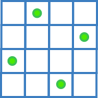

N-Queens with SAT Solver¶
2024 Problem solving
The N-Queens problem consists of a chessboard with n side squares and n queens placed in a non-attacking manner between each queen.
{kind=link}

Fig. 1 A solution for 4-Queens¶
Introduction¶
To solve this problem, we need to consider two main features : solution coding and constraints. The solution coding or solution representation has a significant impact on the architecture algorithm and its performance. The solution coding is a vector of one dimension with index corresponds to the column and the box value correspond to the line. There are four constraints: line, column, diagonal and anti-diagonal. And to limit the number of valid solutions, we need to identify the types of symmetry like axial and central. And therefore add constraints to break the symmetry. This problem is used to introduce the backtracking algorithm. But many ways is possible to solve this problem. We can use a solver using constraint programming (CP) techniques like or-tool choco or gecode. Or translate the N-Queens problem into a SAT problem and use a SAT-solver (like PicoSAT).
Backtracking¶
The space solution is explored using a tree, each node corresponds to a sub-solution or solution and the leaf a valid solution. In algo 1 describe a backtracking recursive. The exploration of the tree is done by depth-first-search and for each sub-solution visited a filtering is applied to determine if it is a valid solution or not.
If it is the valid solution, these children are visiting in their turn. The filtering use the properties of the problem to cut branches less interesting the rather as soon as possible. It’s not needed to have the column constraint because the property of the solution coding fix this constraint beforehand.
Let a vector \(V\) of size \(n\) unidimensional represents the position of the queens on a chessboard with
The line constraint can be formalized
Algorithm 1 (Backtracking)
Backtrack(s, depth, \(s^{*}\))
if \(|s|\) == depth then \(s \leftarrow s^{*} \cup s\)
foreach i in range(N)
\(s^{\prime} \leftarrow s + [i]\)
check constraints on \(s^{\prime}\) line, diagonal, anti-diagonal
if not breaking constrains then
Backtrack(\(s^{\prime}\), depth + 1, \(s^{*}\))
SAT Solver¶
The boolean satisfiability problem (SAT), let’s a boolean formula such as there is a way to assign values to the variable such that if there is possible to satisfy this formula the entire formula becomes true. To reduce the N-Queenes to the SAT problem while persevering is possible all the properties of the original problem enable (i) the study of the problem and (ii) used an efficient solver without developers a new ad hoc solver for a specific problem. In our case, we need to convert for each property of the N-Qeenes problem to the clauses conjunctive normal form (CNF). An example of CNF:
We must define the clauses for each variable imply to the constraints of the problem. Note that the number of variables exponential in function \(N\) because we need for each box of the chessboard a variable.
Definition of the CNF clauses¶
The definition of constraints is carried out by giving the relationship between each variable and the other linked variables. Let’s take an example with 4-Queens and 16 variables with each variable correspond to the box of the chessboard.
Line constraint (for the first line)
Column constraints (for the first column)
Diagonal
Format DIMACS CNF¶
The DIMACS CNF format supported by PicoSAT is organized as follows (i) each line start by \(c\) is a comment (ii) each line start by \(p\) describes section of the clauses with the number of variables and number of clauses and for each clause line the endline contain \(0\).
Example a DIMACS CNF format:
c Here is a comment.
p cnf 5 3
1 -5 4 0
-1 5 3 4 0
-3 -4 0
In CNF clause:
For each instance of N-Queens, we need to define all the clauses. For that, we need to write a genertor.
How used the solver¶
Install the solver, on Ubuntu is available in the depot
sudo apt install picosat
To run the solver with the path of the DIMACS file in the parameter. The solver return all boolean values for each variables, negative variables represent False and positive ones represent True.
$ picosat 4-queens.cnf
s SATISFIABLE
v -1 -2 3 -4 5 -6 -7 -8 -9 -10 -11 12 -13 14 -15 -16 0
Experiments¶
The experiment is done with the generator of the CNF clause for N-Queens write in CPP available here. To do the experimentation, we use a linux machine with 8GB and i7-4790K 4GHz.
N |
# Clauses |
Solving time (s) |
|---|---|---|
100 |
1 647 290 |
0.653 |
200 |
13 254 590 |
11.481 |
300 |
44 821 890 |
21.054 |
400 |
106 349 190 |
51.301 |
500 |
207 836 490 |
241.55 |
In the tab 1 describe the number of clauses and the solving time of the PicoSAT solver for each instance of size N.
Conclusion¶
To solve the N-Queenes problem with a SAT problem carried out by translating the properties of the original problem into the problem while retaining the properties of the original problem. But the SAT solver for this problem in practice is not the right way because the number of variables is increasing exponentially in function of the size of the chessboard. However the bracktraing algorithm will be more effective due has a number of variables limited and the efficient cutting branch as soon as possible.